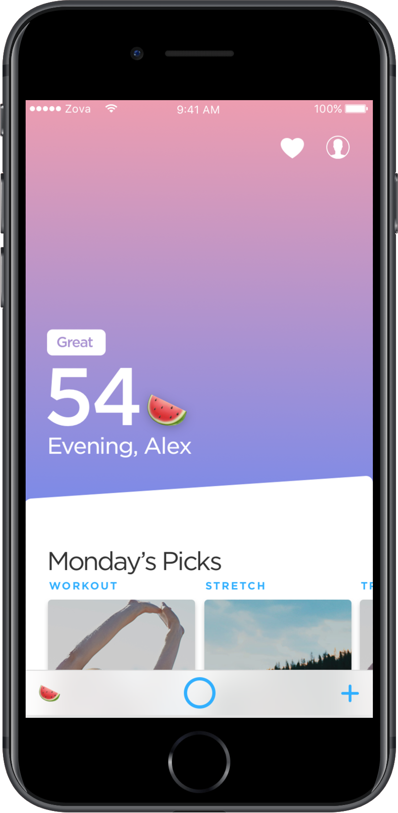
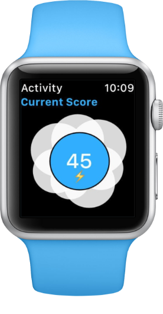
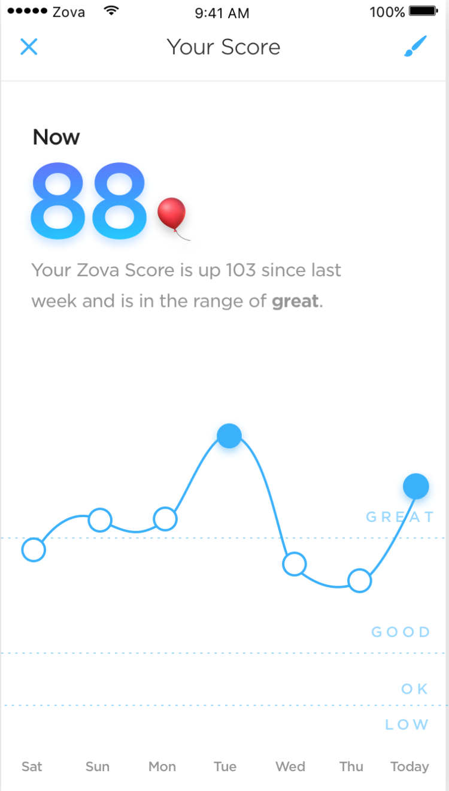
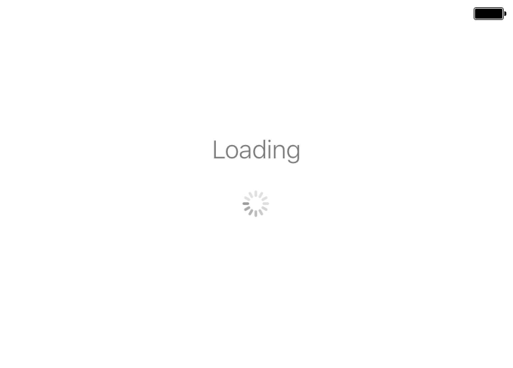
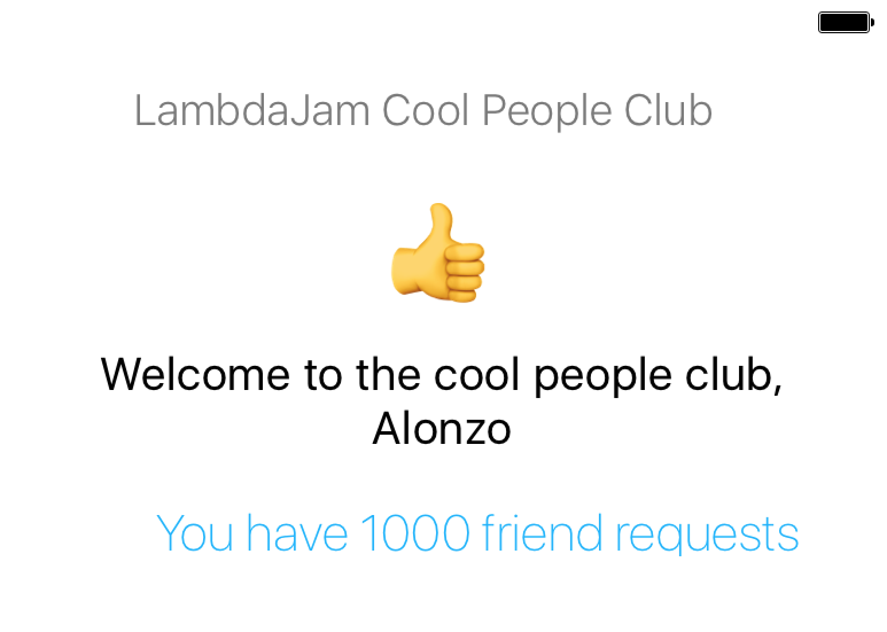
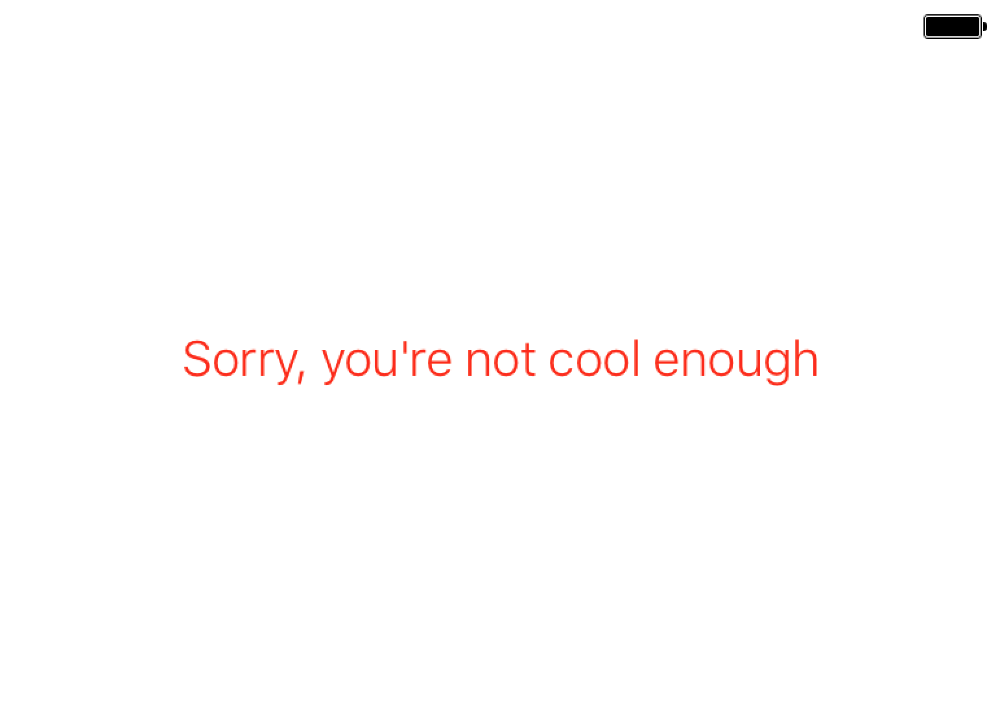

Observing Everything
Completely Reactive Apps in the Real World with RxSwift
Zova


Initially objective-c
Standard iOS app
standard object orientated design
[[[[[[[[[[self delegate] notifyPropertyDidChangeAboutTwoMinutesAgoFrom: a to: b]]]]]]]];
@property NSMutableArray *sections;
...
- (void)handleWODLoaded:(Workout *)WOD;
{
if(nil == WOD)
{
return;
}
[WODManager shared].workout = WOD;
ZVWODCellViewModel *wodCellViewModel = [[ZVWODCellViewModel alloc] initWithWorkout:WOD homeDatasource:self];
ZVCollectionViewSection *wodSection = [[ZVCollectionViewSection alloc] initWithModels:@[WOD] viewModels:@[wodCellViewModel] sectionHeaderViewModel:nil];
[self.sections insertObject:wodSection atIndex:kHomeDatasourceWODSectionIndex];
[self.sections removeObjectAtIndex:kHomeDatasourceWODSectionIndex+1];
}
- (void)handleFeaturedCollectionsLoaded:(NSArray *)featuredCollections;
{
if(nil == featuredCollections || [featuredCollections count] == 0)
{
[self.sections insertObject:[ZVCollectionViewNullSection new] atIndex:kHomeDatasourceFeaturedCollectionSectionIndex];
[self.sections removeObjectAtIndex:kHomeDatasourceFeaturedCollectionSectionIndex+1];
return;
}
}
Standard iOS message passing and notification solution:
There is none
NSNotificationCenter
Delegates
Callback closures
KVO
self.timeObserver = [avPlayer addPeriodicTimeObserverForInterval:CMTimeMake(1, 10)
queue:NULL usingBlock:^(CMTime time) {
NSTimeInterval timeInSeconds = CMTimeGetSeconds(time);
NSTimeInterval currentItemDuration = [weakSelf.player currentItemDuration];
[[NSNotificationCenter defaultCenter]
postNotificationName: kVKVideoPlayerDurationDidLoadNotification
object:weakSelf
userInfo:@{@"duration":[NSNumber numberWithDouble:currentItemDuration]}];
[weakSelf.delegate videoPlayer:weakSelf
didPlayFrame:weakSelf.track time:timeInSeconds lastTime:0];
}];
iOS
Sorry
ReactiveX
An API for
asynchronous programming
with
observable streams
The Observable
An asynchronous value stream

A basic observable could be:
- User tap events on a specific button
- A network request
- A database operation
- Scroll offset in a scroll view as a user swipes
- A timer
- Anything!
Subscriptions
button.rx.tap //This is an observable
.subscribe(onNext: { present(viewController: myAlert) }) //this is a side effect
Observable operators

In practice

Done!
loginButton.rx.tap
.withLatestFrom(
Observable.combineLatest(nameField.rx.text, passwordField.rx.text)
)
.flatMapLatest { userAPI.login(user: $0, password: $1) }
.map { $0.isSuccess ? "Success!" : "Failure" }
.bindTo(resultField.rx.text)
.disposed(by: disposables)
}
loginButton.rx.tap
.withLatestFrom(
Observable.combineLatest(nameField.rx.text, passwordField.rx.text)
)
.flatMapLatest { userAPI.login(user: $0, password: $1) }
.map { $0.isSuccess ? "Success!" : "Failure" }
.bindTo(resultField.rx.text)
.disposed(by: disposables)
combineLatest

loginButton.rx.tap
.withLatestFrom(
Observable.combineLatest(nameField.rx.text, passwordField.rx.text)
)
.flatMapLatest { userAPI.login(user: $0, password: $1) }
.map { $0.isSuccess ? "Success!" : "Failure" }
.bindTo(resultField.rx.text)
.disposed(by: disposables)
withLatestFrom

loginButton.rx.tap
.withLatestFrom(
Observable.combineLatest(nameField.rx.text, passwordField.rx.text)
)
.flatMapLatest { userAPI.login(user: $0, password: $1) }
.map { $0.isSuccess ? "Success!" : "Failure" }
.bindTo(resultField.rx.text)
.disposed(by: disposables)
flatMap/Latest

A functional reactive video player

Key-value observable
- currentItem
- isMuted
- volume
- status
Registered callbacks
- Reached time
- Periodic time
Broadcast notifications
- Reached end of item
- Failed to play
- Player skipped time
KVO -> Observable
extension Reactive where Base: AVPlayer {
public var currentItem: Observable<AVPlayerItem>{
return observe(AVPlayerItem.self, "currentItem")
}
}
NSNotification -> Observable
extension Reactive where Base: AVPlayer {
public var itemEnd: Observable<NSNotification> {
return Observable.merge(
notificationCenter.rx.notification(NSNotification.Name.AVPlayerItemDidPlayToEndTime),
notificationCenter.rx.notification(NSNotification.Name.AVPlayerItemFailedToPlayToEndTime)
)
}
}
Callback -> Observable
extension Reactive where Base: AVPlayer {
public func seekTime(scale: CMTime) -> Observable<Double> {
return Observable.create { observer in
let timeObserver = player.addPeriodicTimeObserver(forInterval: scale, queue: nil) {
observer.on(.next($0.seconds))
}
return Disposables.create {
player.removeTimeObserver(timeObserver)
}
}
}
}

class WorkoutPlayer {
public lazy var currentExerciseName: Observable<String> =
Observable.combineLatest(self.workout, self.currentItem) { workout, currentItem in
workout.exercises[currentItem.position].name
}
}
The old fashioned way
protocol WorkoutPlayerDelegate {
func exerciseNameChanged(name: String)
}
class WorkoutPlayer {
var workout: Workout {
didSet {
updateCurrentExercise()
}
}
var currentItem: WorkoutPlayerItem?
func setupObserving() {
let player = AVPlayer()
addObserver(self, forKeyPath: #keyPath(player.currentItem), options: [.old, .new], context: nil)
}
override func observeValue(forKeyPath keyPath: String?, of object: Any?, change: [NSKeyValueChangeKey : Any]?, context: UnsafeMutableRawPointer?) {
if keyPath == #keyPath(player.currentItem) {
currentItem = player.currentItem
updateCurrentExercise()
}
}
func updateCurrentExercise() {
let exercise = workout.exercises[currentItem.position]
delegate.exerciseNameChanged(name: exercise.name)
}
func unsetupObserving() {
removeObserver(self, forKeyPath: #keyPath(player.currentItem))
}
}
Score calculation
- Healthkit (db)
- Workouts
- Pedometer activity times
- Motion coprocessor
- Pedometer activity quality
- Sqlite db
- Historic pedometer activity
- Timeline API (until recently)
- Workouts
protocol ActivitySource {
func activities(from: Date, to: Date) -> Observable<[ScorableActivity]>
}
...
class Scorer {
// [healthkitWorkoutSource, pedometerSource, databaseSource, timelineSource]
let sources: [ActivitySource]
var score: Observable<Double> {
let weekToNow: Observable<(Date, Date)> =
Observable<Int>.timer(0, period: 60, scheduler: MainScheduler.instance)
.map { _ in Date().addingTimeInterval(-60 * 60 * 24 * 7) }
let activities: Observable<[ScorableActivity]> =
weekToNow.flatMapLatest { from, to in
let activities: [Observable<[ScorableActivity]>]
= sources.map { $0.activities(from: from, to: to) }
return Observable.combineLatest(activities) { $0.reduce([]) { $0 + $1 } }
}
return activities.map { self.score(activities: $0) }
}
}
Modelling a screen in all its states
  
enum State {
case loading, failed(message: String), welcome(name: String, friendRequests: String)
}
//Just a recipe, no api requests are made until necessary
var welcomeState: Observable<State> {
return Observable.zip(
userAPI.getUserDetails(token),
friendsAPI.getFriendRequests(token)
) { user, friendRequests in
State.welcome(name: user.name, friendRequests: "You have \(friendRequests.count) friend requests")
}
}
var state: Observable<State> {
return loginRequest //from our previous example
.flatMapLatest { result -> Observable<State> in
switch result {
case .success(let token):
return self.welcomeState
case .failure(let error):
return Observable.just(State.failed(message: error.message))
}
}
.startWith(State.loading)
}
state
.subscribe(onNext: { [unowned self] in
UIView.animate(withDuration: 0.2) { //yep we can do animations
switch state {
case .loading:
self.loadingView.alpha = 1
self.mainView.alpha = 0
self.failedView.alpha = 0
case let .welcome(name, friendRequestCount):
self.loadingView.alpha = 0
self.mainView.alpha = 1
self.failedView.alpha = 0
self.nameLabel.text = name
self.friendRequestLabel.text = friendRequestCount
case .failed:
self.loadingView.alpha = 0
self.mainView.alpha = 0
self.failedView.alpha = 1
}
}
})